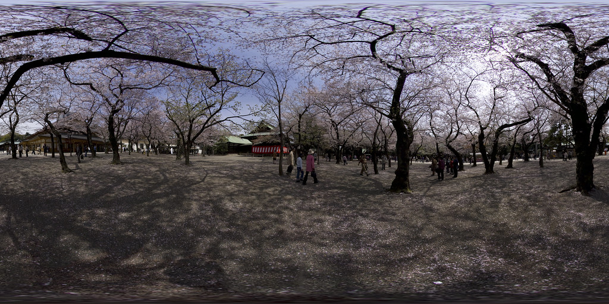

<!DOCTYPE html>
<html>

<head>
  <meta charset="utf-8">
  <title>Hello, WebVR! • A-Frame</title>
  <meta name="description" content="Hello, WebVR! • A-Frame">
  <!-- import aframe js library -->
  <script src="https://aframe.io/releases/1.3.0/aframe.min.js"></script>
  <!-- <script src="https://cdn.rawgit.com/donmccurdy/aframe-extras/v5.0.1/dist/aframe-extras.min.js" ></script> -->
  <script src="https://cdn.jsdelivr.net/gh/donmccurdy/aframe-extras@v6.0.1/dist/aframe-extras.min.js"></script>
</head>

<body>
  <!-- every aframe scene starts with a-scene tag -->
  <a-scene stats>
    <!-- asset section  -->
    <a-assets>
      <a-asset-item id="dragon" src="dragon.glb"response-type="arraybuffer" src="https://cdn.glitch.com/1061d524-9d0f-4b25-97fd-48ebd0fce63c%2Fsceneglb.glb?1546534633849"></a-asset-item>
<!--  -->
    </a-assets>
    <!-- <a-camera> -->
      <a-cursor></a-cursor>
    <!-- </a-camera> -->
    <a-camera camera="" position="0.019218372488010508 1.6 1.0675720477193245" rotation="8.594366926962312 1.0313240312354794 0" look-controls="" wasd-controls="" data-aframe-inspector-original-camera="">
      <a-cursor material="" raycaster="" cursor="" geometry=""></a-cursor>
    
    </a-camera>
    <!-- sky -->
    <a-sky src="#sky"></a-sky>
    <!-- <a-entity gltf-model="#dragon" scale="0.1 0.1 0.1" position="0 1.5 -2" animation-mixer="clip:normal; loop:2; timeScale: 5; crossFadeDuration: 1"></a-entity> -->
    <a-entity gltf-model="dragon.glb" scale="0.1 0.1 0.1" position="0 1.5 0.862" animation-mixer="clip: normal; loop: 2; timeScale: 5; crossFadeDuration: 1"></a-entity>
  
    <a-plane position="0 0 -4" rotation="-90 0 0" width="4" height="4" color="#7BC8A4" shadow></a-plane>
  
  </a-scene>

</body>

</html>